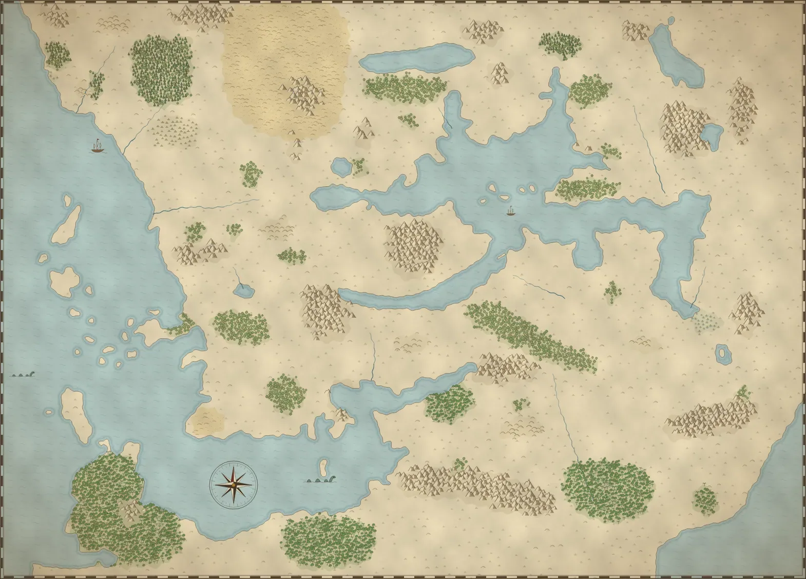

Carte de Faerûn
Les Royaumes Oubliés en 1373 CV. Cliquez sur un nom pour sa fiche ; molette, pincement ou boutons pour zoomer.

Fond redessiné d’après la carte de Faerûn en version française fournie par Antoine (calque « Carte de référence ») : côtes, fleuves, forêts, montagnes et cités en suivent le tracé. Les noms sont ceux de la version française ; le nom anglais figure en petit dans chaque fiche. Le cadre va de la Côte des Épées à Thay et de Luskan à Chult : Luiren, Halruaa, le Tashalar et les Terres de la Horde sont hors de la carte. Autour du Lac de Vapeur, les lieux propres à la campagne (le Clos, Bridgestone, l’abbaye…) sont placés d’après les séances : leur position exacte n’est pas connue.
La campagne d’Isidoro
- Abbaye du Cœur Radieux position supposéeÀ 1 km au nord de la route, sentier signalé par une stèle. Ouverte à tous, sans garnison ; de nombreux autels, vasques des visions, ruisseau pour se laver les pieds. Visions d’Alaundo. Peter Bridgestone veut l’incendier le 26 Ches 1373. Aventure 2
- AnkhapurGrande cité de la rive nord. Taxe d’entrée de 50 po pour les prêtres ; dockers du Trône de Fer ; scriptorium du Frère Blaise. Relais du convoi du phylactère le 16 Ches 1373. Journal 1
- Ankharia position supposéeAvant-poste néthérisien de la forêt de Qurth, fondé vers −2500 CV, abandonné à la chute de Néthéril (−339). Le fleuve Scelptar le coupe en deux : temple d’Amaunator et Mini-Mythallar où Alcatar a lié une part de son âme (rive est), temple de Shar et puits d’ombres (rive ouest). Elfes sauvages, Nagahydra momifiée, armée de nécrophages. Carnet d’Urth, aventure 3
- Bastion de Baine position supposéeForteresse de Baine dans les Collines des Serpents, reliée à Mintar par des portails de l’ombre. Teldorn
- Bois d’Épines position supposéeAu-delà de Bridgestone. Une clairière d’arbres de fer aux feuilles en lames, où Elrayck a trouvé Kismet ; des œufs de dragon vert y sont peut-être restés. Testament
- Bridgestone position supposéeForteresse-pont au nord du comté du Clos, seul pont sur la Minta, face aux terres de Mintar ; retombée aux mains de l’ennemi. Le père d’Isidoro, un moine et le père de Lucas y ont jadis guidé la révolte des esclaves. Livrée à Teldorn par Peter et Jérôme. Teldorn, Jérôme
- Champ-Doré position supposéeHameau de fermes du comté du Clos, avec un temple qui accueille les pèlerins. Aventure 2
- Le comté du Clos position supposéeAu nord de Saelmur : plaines à blé, rocaille et vallons, sans patrouilles. Le comte est l’oncle de Théodoric. Aventure 2
- Crypte des géants nécromanciens position supposéeRepaire d’Alcatar : une crypte de géants nécromanciens au Grand Shaar. Vandor
- DerluskVille natale d’Isidoro, sur la rive sud-est. Grand temple de Lathandre fondé par son père. Un espion de Teldorn y a été égorgé. Journal 1
- Fort Corner position supposéeBourg fortifié entre Saelmur et le Clos : palissade, 500 à 1 000 habitants, une cinquantaine de soldats, un temple. La garnison paie les primes. Aventure 2
- Forêt de Qurth Forest of QurthPrès de Derlusk. Alcatar y a mené deux expéditions et soumis des spriggans de l’ombre. Dernier lambeau du « Grand Vert » qui couvrait jadis le Shaar ; jungle humide nourrie par les brumes du Lac de Vapeur. Depuis la Campagne des Sept Brûlures (440 CV), une malédiction calishite y fait muter la faune et s’agiter les arbres dès que des humains y entrent. Carnet d’Urth, Vandor
- InnarlithCité-État de l’extrémité est du Lac de Vapeur. Sous l’influence secrète de Cyric. Le troll Arrk y a été vu. Teldorn
- Kzelter position supposéeCité-garnison à l’extrême est du Téthyr, entre les Monts des Flocons et la forêt de Mir. Théâtre du Miracle de Kzelter ; tenue par Brixen Sombrespoir. Son blason est lié à celui de Baine ; ses hommes, menés par Garrick de Bridgestone, ont pris part à l’attaque de Saelmur. Un bastion de Baine se cache dessous, relié à Mintar par des portails de l’ombre. Testament, aventure 3
- La Loge de l’Ossement position supposéeRepaire d’Alcatar : l’ancienne crypte de Thargor Barbe-de-Fer, dans les Monts Nethères. Vandor
- la Minta position supposéeRivière qui descend du nord vers le Lac de Vapeur ; Bridgestone en garde le seul pont.
- MintarPort de la rive nord-ouest, tenu par Teldorn Sombre-Espoir, ennemi de la région. Théocratie de Teldorn depuis 1362. Citadelle sur la falaise, chapelle privée, égouts gardés par un gauth, baie infestée d’aboleths. À moitié brûlée par Balagos le 15 Tarsakh 1373. plans de Mintar, plan d’Elrayck
- SaelmurCité de la rive nord du Lac de Vapeur, sur quatre collines : grands temples de Torm, Tyr et Heaume, université des mages-lames, Parlement des marchands, bas quartiers et docks. Remparts de 10 m, 25 000 à 30 000 habitants. Attaquée le 20 Ches 1373 par Alcatar et Mintar, selon les documents. Tombée dans la nuit : temples de Torm et de Heaume, université des mages et phare détruits, bibliothèque d’Oghma en flammes ; étendards zhentarim sur les remparts. Rue des Tanneurs, au n°6, la cave de Mirel garde ses tonneaux de belladone. Devant la ville, le camp de Torm (trois à quatre mille soldats du maréchal Sébastien de Saint-Lun) et le camp des réfugiés. Aventure 2, aventure 3
- Sanctuaire sous l’Anauroch position supposéeRepaire d’Alcatar : une crypte néthérisienne et un second sanctuaire caché sous l’Anauroch. Vandor
Lieux pas encore placés
- GhlininCité du comté du même nom, à palissade et deux tours ; on y parle du nez. Auberge-casino du Baladin Joyeux. Aventure 2
- L’auberge du Pissenlit BleuPoint de départ de l’aventure 2. Aventure 2
- La Pinte sans FondAuberge du comté du Clos, où Théodoric de Bridgestone fonde les Lames de Tymora ; le maréchal y envoie Isidoro et Lucas, QG des Lames de Tymora ; Micheline la tient. Le sacrifice de Mintar, aventure 3
- La baronnie de Trèfleure (?)Baronnie voisine de Saelmur, qui élève des chevaux. Aventure 3
- LhesperCité humaine bâtie vers 316 CV sur les rives du Lac de Vapeur, incendiée en 440 CV par le Calimshan lors de la Campagne des Sept Brûlures. Carnet d’Urth
- L’Ermitage du Roc NoirLieu du Nord cité par les documents. Barthélemy
- Les Pics des CrépusculesLeurs cavernes abritent un bastion de Baine relié à Mintar par des portails de l’ombre. Teldorn
Régions
- Aglarond AglarondRoyaume forestier de la Simbul, ennemie jurée de Thay. Capitale : Velprintalar.
- Amn AmnRoyaume marchand gouverné par le Conseil des Six ; la magie profane y est sévèrement réglementée. Capitale : Athkatla.
- Anauroch AnaurochLe Grand Désert, qui s’étend sur l’ancien empire de Néthéril.
- Bief de Vilhon Vilhon ReachCités marchandes rivales autour du long golfe du Bief : Hlondeth, Arrabar, Alaghôn…
- Calimshan CalimshanLe plus ancien empire humain de la côte sud, terre de pachas, de génies et de guildes de voleurs. Capitale : Calimport.
- Chessenta ChessentaCités-États rivales et belliqueuses, qui révèrent la mémoire du héros-dragon Tchazzar.
- Chevauchée The RideSteppes et collines au nord de la Mer de Lune.
- Chondath ChondathAncien royaume en déclin, au sud du Bief de Vilhon, aux cités devenues indépendantes.
- Chult ChultPéninsule de jungles et de volcans, peuplée de dinosaures et semée de ruines.
- Contrées du Mitan Occidentales Western HeartlandsTerres de passage entre la Côte des Épées et le Cormyr, parcourues par les grandes routes commerciales : la Porte de Baldur, Elturel, Scornubel, Iriaebor.
- Cormyr CormyrLe Royaume Forestier des Obarskyr. Depuis la mort d’Azoun IV (1369 CV), la princesse Alusair est régente au nom du jeune Azoun V. Capitale : Suzail.
- Côte des dragons Dragon CoastRivage sud du Lac des Dragons, repaire de marchands peu scrupuleux, de pirates et de mercenaires.
- Côte des Épées Sword CoastLa côte ouest de Faerûn, d’Eauprofonde à Amn.
- Damarie DamaraRoyaume du roi Gareth Dragonsbane, relevé après la chute du Roi-Sorcier.
- Grand Val The Great DaleVallée encadrée de deux forêts, terre de druides et de sauvages.
- Grande Faille The Great RiftGigantesque canyon, foyer des nains d’or.
- Haute-Forêt High ForestImmense forêt primitive du Nord, refuge des elfes, des centaures et de créatures plus anciennes encore.
- Îles Nélanthères Nelanther IslesArchipel de pirates qui écume la Côte des Épées.
- Îles Sélénae Moonshae IslesArchipel des Ffolk et des Hommes du Nord (les Moonshae), sous la protection de la Déesse Terre.
- Impiltur ImpilturRoyaume côtier qui monte la garde face aux démons de Narfell. Capitale : Lyrabar.
- Lantan LantanÎle des inventeurs, gnomes et humains dévoués à Gond.
- Les Vaux The DalelandsPetites communautés libres, rurales et indépendantes, alliées aux elfes de Cormanthor.
- Marches d’argent Silver MarchesConfédération de cités du Nord réunies autour de Lunargent et de dame Alustriel.
- Mulhorande MulhorandThéocratie millénaire où les dieux se sont incarnés et règnent par leurs prêtres.
- Narfell NarfellSteppes froides parcourues par des tribus nomades, sur les ruines d’un empire démonolâtre.
- Le Nord The NorthVaste région sauvage entre la Côte des Épées et l’Anauroch, ponctuée de cités-États : Eauprofonde, Padhiver, Luskan, Lunargent.
- Rashéménie RashemenPays des berserkers et des sorcières masquées, farouches ennemis de Thay.
- Royaumes Frontaliers Border KingdomsMosaïque de petits royaumes fondés par des aventuriers, sur la rive sud du Lac de Vapeur.
- Sembie SembiaRiche oligarchie marchande, où l’or compte plus que la naissance. Capitale : Ordulin.
- Le Shaar The ShaarImmense prairie du sud, parcourue par des tribus nomades et des marchands.
- Shaar oriental Eastern ShaarPrairies orientales du Shaar, vers Luiren et la Grande Mer.
- Téthyr TethyrRoyaume relevé après des années d’anarchie par la reine Zaranda et le roi Haedrak III. Capitale : Darromar.
- Thar TharLandes désolées au nord de la Mer de Lune, peuplées d’orques et d’ogres.
- Thay ThayMagocratie des Magiciens Rouges, gouvernée par les zulkirs. Capitale : Eltabbar.
- Thesk TheskCarrefour marchand vers l’Orient, au départ de la Route d’Or.
- Turmish TurmishRépublique marchande sur la rive sud de la mer des Étoiles Déchues, au nord du Bief de Vilhon.
- Unther UntherVieil empire théocratique, en déclin depuis la mort de son dieu Gilgeam.
- Vaasie VaasaTerres désolées au pied des monts Galena, jadis royaume du Roi-Sorcier Zhengyi.
- Le Vaste The VastTerres sauvages, mines et cités côtières de la mer des Étoiles Déchues.
Cités
- Almraiven AlmraivenPort de l’est du Calimshan.
- Arabel Arabel position supposéeGrande cité marchande du nord du Cormyr.
- Athkatla AthkatlaCapitale de l’Amn, cité des marchands et des guildes.
- Berdusk Berdusk position supposéeCité paisible, siège de la Salle du Crépuscule des Ménestrels.
- Bezantur BezanturLe grand port de Thay.
- Calimport CalimportCapitale du Calimshan, la plus grande cité de Faerûn.
- Château-Suif CandlekeepLa plus grande bibliothèque de Faerûn, sur la Côte des Épées. Les écrits d’Alaundo et les prophéties de Baine y sont conservés ; on y entre en offrant un ouvrage d’au moins 100 po. Alcatar y a étudié en 1364. Aventure 2, Barthélemy
- Château-Zhentil Zhentil KeepCité fortifiée des Zhentarim et du culte de Baine, sur la Mer de Lune. Barthélemy
- Cimbar CimbarCité de Chessenta, sur la mer des Étoiles Déchues.
- Citadelle du Corbeau Citadel of the RavenForteresse au nord de la Mer de Lune. Vandor
- Darromar DarromarCapitale du Téthyr, siège de la reine Zaranda.
- Eauprofonde WaterdeepLa Cité des Splendeurs, plus grande cité de la Côte des Épées, gouvernée par des Seigneurs masqués.
- Elturel ElturelCité fortifiée sur la Chionthar.
- Esmeltaran EsmeltaranCité de l’Amn au bord du lac Esmel.
- Heliogabalus HeliogabalusCapitale de la Damarie.
- Hillsfar HillsfarCité marchande de la rive sud de la Mer de Lune.
- Hlondeth HlondethLa Cité des Serpents, gouvernée par la famille Extaminos.
- Immilmar ImmilmarCapitale de la Rashéménie.
- Iriaebor IriaeborCité marchande hérissée de tours, sur le cours supérieur de la Chionthar.
- Lunargent SilverymoonCité de dame Alustriel, haut lieu de la magie et du savoir. On y trouve la Sombre Académie et le Faucon d’Argent. Barthélemy
- Luskan LuskanLa Cité des Voiles, port des Grands Capitaines et de la Confrérie des Arcanes.
- Lyrabar LyrabarCapitale d’Impiltur.
- Memnon MemnonPort de l’ouest du Calimshan, au bord du désert.
- Mezro Mezro position supposéeCité de Chult, au cœur de la jungle.
- Mulmaster MulmasterPort fortifié de la rive sud de la Mer de Lune.
- Myth Drannor Myth DrannorRuines de l’ancienne cité elfique, au cœur de Cormanthor.
- Ordulin Ordulin position supposéeCapitale de la Sembie.
- Padhiver NeverwinterLe Joyau du Nord, cité de lord Nasher Alagondar.
- Phlan PhlanCité de la rive nord de la Mer de Lune.
- La Porte de Baldur Baldur’s GateGrand port marchand de l’embouchure de la Chionthar, gouverné par ses ducs.
- Rougemélèze Red Larch position supposéeVillage sur la Longue Route, entre Eauprofonde et Mirabar. Vandor
- Scornubel ScornubelLa Cité des Caravanes.
- Selgaunt SelgauntLe plus riche port de la Sembie.
- Skuld SkuldCapitale de Mulhorande.
- Suzail SuzailCapitale du Cormyr, sur le Lac des Dragons.
- Unthalass UnthalassCapitale d’Unther.
- Valombre ShadowdaleLe plus célèbre des Vaux, demeure de l’archimage Elminster.
- Velprintalar VelprintalarCapitale de l’Aglarond.
- Zazesspur ZazesspurGrand port du Téthyr.
Mers, lacs, forêts et montagnes
- Bois de Chondal ChondalwoodVaste forêt au sud du Bief de Vilhon.
- Collines des Serpents Serpent HillsCollines au nord-est de l’Amn. Une forteresse de Baine s’y cache.
- Cormanthor CormanthorGrande forêt des elfes, autour des ruines de Myth Drannor.
- Désert de Calim Calim DesertDésert de l’ouest du Calimshan.
- Forêt de Mir Forest of MirForêt entre le Téthyr et le Calimshan.
- Forêt de Tethir WealdathLa grande forêt du Téthyr (Wealdath), longtemps refuge des elfes.
- Haute-Lande High MoorVaste lande désolée à l’est de la Côte des Épées.
- Jungle de Chult Jungles of ChultJungle tropicale à peine explorée.
- Lac Ashane Lake AshaneLe lac des Larmes, au cœur de la Rashéménie.
- Lac de Vapeur Lake of SteamMer intérieure aux eaux chaudes et soufrées, reliée à la mer Étincelante, bordée de cités-États indépendantes et rivales : Ankhapur, Innarlith, Mintar, Saelmur, Derlusk… C’est là que se joue la campagne d’Isidoro.
- Lac des Dragons DragonmereGolfe occidental de la mer des Étoiles Déchues, bordé par le Cormyr et la Côte des dragons.
- Mer de Lune MoonseaGrand lac froid du nord, bordé de cités rudes : Château-Zhentil, Hillsfar, Mulmaster, Phlan.
- Mer des Épées Sea of SwordsL’océan de la Côte des Épées, entre le continent et les îles de l’ouest.
- Mer des Étoiles Déchues Sea of Fallen StarsLa Mer Intérieure, cœur des royaumes de l’est.
- Mer d’Alamber Alamber SeaGolfe sud-est de la mer des Étoiles Déchues, entre Chessenta, Unther et Mulhorande.
- Mer Étincelante Shining SeaLa mer chaude du sud, entre le Calimshan, Chult et le Tashalar.
- Mer Inviolée Trackless SeaLe grand océan de l’ouest ; au-delà se trouve l’île elfique d’Éternelle-Rencontre.
- Monts des Flocons Snowflake Mountains position supposéeMontagnes de l’est du Téthyr, au-dessus de Kzelter.
- Monts d’Orsraun Orsraun MountainsMontagnes du Turmish, au nord du Bief de Vilhon.
- Monts Nethères Nether MountainsMontagnes entre Lunargent et l’Anauroch. Alcatar y tient la Loge de l’Ossement.
- Plateau de Thay Plateau of ThayHaut plateau volcanique au cœur de Thay.